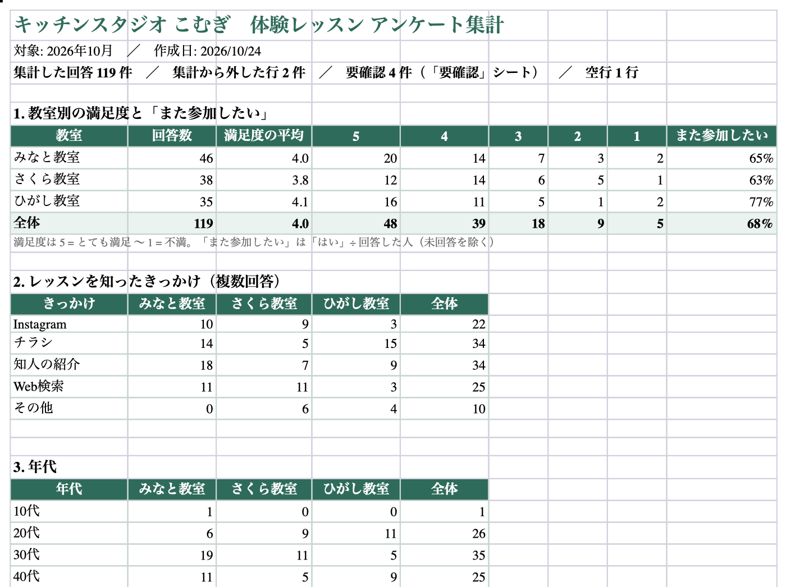

01
届くファイルは、教室ごとに形がちがう
同じアンケートでも、見出しの言葉・満足度の書き方（「5 (とても満足)」「４」「やや満足」）・文字コードがばらばら。空行や二重入力、範囲外の値、電話番号入りのご意見も混ざります。各ファイルの先頭 6 行です。
| タイムスタンプ | 年代を教えてください | 今日のレッスンの満足度を教えてください | また参加したいですか？ | このレッスンを何で知りましたか？（複数選択可） | ご意見・ご感想 |
|---|---|---|---|---|---|
| 2026/10/03 12:23:15 | 20代 | 2 | いいえ | 知人の紹介 | 人数が多くて先生に質問しにくかったです。 |
| 2026/10/03 12:31:31 | 40代 | 4 | はい | Web検索 | 時間どおりに終わったので予定が立てやすかったです。 |
| 2026/10/03 14:00:03 | 40代 | 4 | 未定 | チラシ | |
| 2026/10/03 19:11:39 | 30代 | 4 | はい | 知人の紹介 | 子どもと一緒に参加できてうれしかったです。 |
| 2026/10/04 19:09:43 | 40代 | 5 (とても満足) | 未定 | 知人の紹介, チラシ | 子どもと一緒に参加できてうれしかったです。 |
| 2026/10/04 13:43:33 | 30代 | 3 | はい | Web検索 |
| 日付 | 年齢 | 満足度(1〜5) | 再参加 | きっかけ | 感想 |
|---|---|---|---|---|---|
| 2026/10/03 | 33 | 3 | △ | ネット | |
| 2026/10/04 | 54 | 4 | ○ | チラシ | |
| 2026/10/07 | 49 | ４ | ○ | 友人 | |
| 2026/10/07 | 36 | ５ | ○ | インスタ | 道具がそろっていて手ぶらで来られました。 |
| 2026/10/10 | 36 | ５ | △ | 友人 | 次はパンのコースにも出てみたいです。 |
| 2026/10/10 | 34 | 4 | △ | ネット |
| 記入日 | 年代 | 満足度 | またの参加 | 知ったきっかけ | コメント |
|---|---|---|---|---|---|
| 10/3 | 20代 | やや満足 | したい | 知り合い | 子どもと一緒に参加できてうれしかったです。 |
| 10/7 | 30代 | 満足 | したい | チラシ | 先生の説明がわかりやすく、家でも作れそうです。 |
| 10/7 | 40代 | 満足 | したい | チラシ | |
| 10/7 | 20代 | やや不満 | しない | チラシ | 開始が10分ほど遅れました。 |
| 10/10 | 20代 | やや満足 | したい | チラシ | 次はパンのコースにも出てみたいです。 |
| 10/10 | 40代 | 普通 | したい | 知り合い |
02
コマンド 1 つで、まとめて集計
$ uv run survey-report
みなと教室 回答 46 件 満足度 4.0
さくら教室 回答 38 件 満足度 3.8
ひがし教室 回答 35 件 満足度 4.1
全体 回答 119 件 満足度 4.0
集計から外した行 2 件・要確認 4 件・空行 1 行（Excel の「要確認」シート）
書き出し: out/report.xlsx / out/report.html表記ゆれは自動でそろえる
- 「5 (とても満足)」「５」「満足」5
- 「○」「したい」はい
- 「インスタ」「インスタグラム」Instagram
- 「友人」「知り合い」「Web 検索」知人の紹介・Web検索
- 年齢「34」30代
- 「10/5」（年なし）2026/10/5
読めない行は、黙って捨てない
確認が必要な行は、理由・ファイル名・行番号つきで「要確認」シートに一覧にします。元のファイルを開いて、すぐ直せます。
- 集計から外す満足度が空欄・読めない（「4.5」「5段階中4」は推測しない）・1〜5 の範囲外
- 集計に入れて知らせる年代・日付・「また参加したいか」が読めない（「不明」「未回答」として数える）、直前の行とまったく同じ回答（二重入力の疑い）、対象の月以外の日付
- 伏せて知らせるご意見の中の電話番号・メールアドレス（HTML レポートでは伏せ字）
03
できあがるレポート
Excel（グラフ付き）と、メールやブラウザで見られる HTML の 2 つを書き出します。

04
教室が増えても、設定ファイルを直すだけ
どのファイルの、どの見出しが、どの項目か。教室ごとの違いは設定ファイル（config.toml）にまとめているので、教室が増えたり質問文が変わったりしても、プログラムは直しません。見出しが見つからないときは、どの教室のどの見出しかを日本語で表示して止まります。
[[sources]] 1 つ = 回答ファイル 1 つ
# name … 教室名（レポートに出る名前）
# file … ファイルの場所（このファイルからの相対パス）。.csv / .xlsx
# encoding … CSV の文字コード（utf-8-sig / cp932 など）
# header_row … 見出しの行番号（1 から数える。Excel で上にタイトル行があるときに使う）
# [sources.columns] … 「レポートの項目 = ファイルの見出し」の対応
[report]
title = "体験レッスン アンケート集計"
organization = "キッチンスタジオ こむぎ"
period = "2026年10月"制作のポイント
- 毎月の手作業をなくす
- 3 つのファイルを開いて転記・集計・グラフ作成していた作業が、ファイルを置いてコマンドを実行するだけになります。
- まちがいを見つけやすく
- 確認が必要な行は理由・ファイル名・行番号つきで残し、満足度の内訳の合計が回答数と合うか、エラーのときに日本語で止まるかをテストで確かめています。
- 読む人に合わせた並び
- 自由記述は満足度の低い順に並べ、直すべきことが先に目に入るようにしました。
- Excel が苦手な人にも
- 同じ集計を HTML 1 枚にも書き出すので、メールに添付したりブラウザで見たりできます。ご意見の中の電話番号・メールアドレスは伏せ字にします。
技術: Python 3.12 / openpyxl / pytest、実行環境は uv。
使う人の環境に合わせた渡し方
- コマンドで実行Python（uv）を入れた PC で
uv run survey-report。手順書をつけてお渡しします - ダブルクリックで実行設定ファイルと回答ファイルを同じフォルダに置いて、起動用のファイルを開くだけにする形（ご相談）